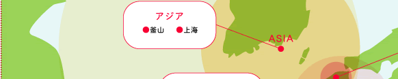
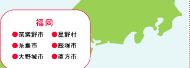
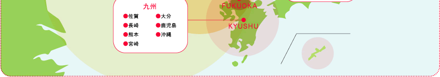

私たちNPO法人イデア九州・アジアは、福岡を中心に、
九州・アジア領域で集客・交流サービスのプラットフォーム（PF）となり、
交流・まちづくり活動、コミュニティ・ビジネス、社会的企業の振興を促進していきます。
豊富な自社商品により、参加者に新しい魅力を提供し、滞在・回遊を促進いたします。
人材育成をはじめとした事業組織の定着もご提案し、
まちに根付いた地域振興事業のお手伝いをいたします。
食・文化・伝統・音楽・アート・まち歩き・お祭りなど、まちにある地域資源。案内人がいるからこそ、入れない場所に入れたり、普段は体験できないことをできたりして、地域資源がさらに魅力的になる。まち資源を、案内人がさらにコーディネートした、都市型の体験型プログラム。

